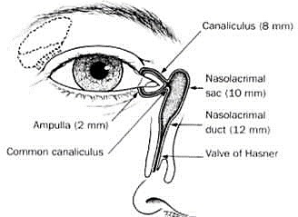

Part II · Drainage system
The lacrimal drainage system
In fact the drainage system begins with the sharp posterior border of the lid margin, which, being closely opposed to the eyeball, drains the tears by capillarity to the lacus lacrimalis at the medial canthus.
The lacrimal drainage system is formed of:
- 2 puncta.
- 2 canaliculi.
- The lacrimal sac.
- The nasolacrimal duct — ending in the inferior meatus of the nose.
